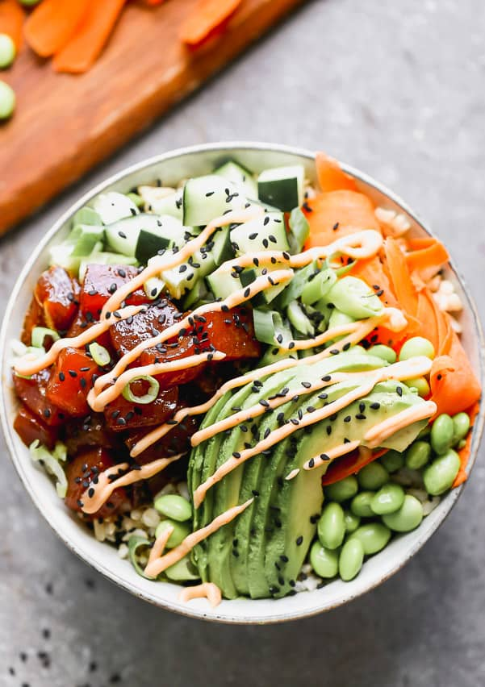

Poke Bowl

Description:
In Hawaiian culinary traditions, “poke” literally means to cut something. Poke bowls are highly customizable, which allows for better choices based on your personal preferences. Poke bowl nutrition is derived from the base ingredient, protein items, sauces and toppings. A poke bowl base usually consists of rice, with protein choices of tuna, tofu, salmon and many more options. Sauces are an essential part of a poke bowl and can consist of wasabi mayo, eel sauce and dragon aioli. Poke bowl toppings are the last step and usually include crispy onions, cherry tomatoes, avocados, cashews and more.
Ingredients
- 2 cups shredded green leaf lettuce
- 2 cups sashimi-grade tuna, salmon, or other fish (towel-dried and cubed)
- 1 small cucumber, seeded and sliced
- 1 ripe mango, peeled and cubed
- 1 semi-ripe avocado, cubed
- Garnishes: Chopped cilantro, green onions, toasted sesame seeds, Furikake (highly recommended)
- Cooked white rice
- 3 TB good quality Tamari, GF soy sauce
- 1 TB Sriracha hot sauce
- 3 TB regular mayo
- 1 tsp Asian rice wine vinegar
- 1 tsp Asian toasted sesame oil
- 1 tsp granulated sugar
- ¼ tsp ginger powder
- ¼ tsp wasabi paste
Steps:
- Make Sriracha Mayo: Stir together the mayo and Sriracha in a small bowl. Cover and chill until ready to use.
- Make Sesame-Soy Sauce: In a bowl, hand-whisk together all Sauce ingredients. Stir cubed tuna/salmon into the sauce, coating well. Cover and keep chilled until ready to assemble bowls.
- Assemble Bowls: Divide cooked rice into 4 smaller bowls (or 2 larger bowls.) Evenly layer each bowl according to order: lettuce, marinaded tuna/salmon, cucumber, mango, and avocado. Sprinkle with chopped cilantro, green onions, sesame seeds, and Furikake as desired. Drizzle with Sriracha Mayo. Serve immediately.